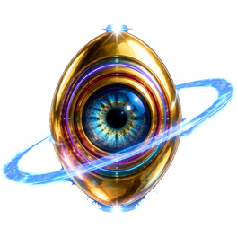
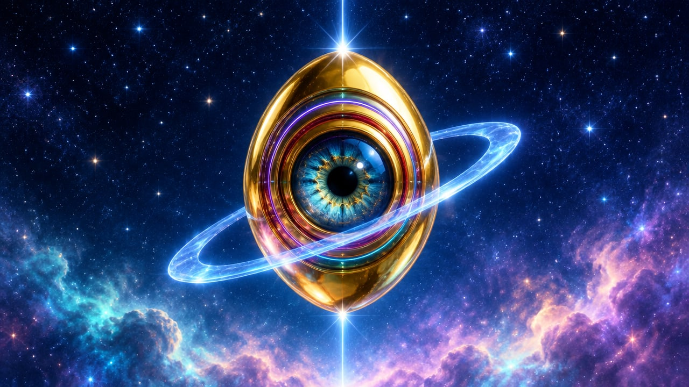

ONE ARTIST
Not a playlist with a hundred names you forget. One universe you can get lost in.

AS ABOVE, SO BELOW.
ONE ARTIST. ONE UNIVERSE.
IN YOUR POCKET.
Music, visuals and hidden secrets by kuni. Scan a QR code, no sign-up. Dive in for fifteen minutes and listen on purpose.

The musician and artist behind kuni universe.
Photo AI-enhancedNot a playlist with a hundred names you forget. One universe you can get lost in.
Fifteen minutes at a time, in your free time, not in the background.
Shooting stars open secret stargates. Some songs only show up for those who search.
Follow the music without being followed. Every song is tuned to 432 Hz.
No store, no download, no sign-up. It opens in your browser, on your phone, tablet or computer.
OPEN THE APPNow it lives on your home screen like any other app, and it always opens the newest version of the universe.